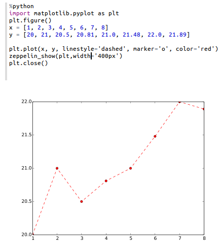

Python 2 & 3 Interpreter for Apache Zeppelin
Configuration
| Property | Default | Description |
|---|---|---|
| python | python | Path of the already installed Python binary (could be python2 or python3). If python is not in your $PATH you can set the absolute directory (example : /usr/bin/python) |
Enabling Python Interpreter
In a notebook, to enable the Python interpreter, click on the Gear icon and select Python
Using the Python Interpreter
In a paragraph, use %python to select the Python interpreter and then input all commands.
The interpreter can only work if you already have python installed (the interpreter doesn't bring it own python binaries).
To access the help, type help()
Python modules
The interpreter can use all modules already installed (with pip, easy_install...)
Use Zeppelin Dynamic Forms
You can leverage Zeppelin Dynamic Form inside your Python code.
Zeppelin Dynamic Form can only be used if py4j Python library is installed in your system. If not, you can install it with pip install py4j.
Example :
%python
### Input form
print (z.input("f1","defaultValue"))
### Select form
print (z.select("f1",[("o1","1"),("o2","2")],"2"))
### Checkbox form
print("".join(z.checkbox("f3", [("o1","1"), ("o2","2")],["1"])))
Zeppelin features not fully supported by the Python Interpreter
- Interrupt a paragraph execution (
cancel()method) is currently only supported in Linux and MacOs. If interpreter runs in another operating system (for instance MS Windows) , interrupt a paragraph will close the whole interpreter. A JIRA ticket (ZEPPELIN-893) is opened to implement this feature in a next release of the interpreter. - Progression bar in webUI (
getProgress()method) is currently not implemented. - Code-completion is currently not implemented.
Matplotlib integration
The python interpreter can display matplotlib graph with the function z.show().
You need to have matplotlib module installed and a XServer running to use this functionality !
%python
import matplotlib.pyplot as plt
plt.figure()
(.. ..)
z.show(plt)
plt.close()
z.show function can take optional parameters to adapt graph width and height
%python
z.show(plt, width='50px')
z.show(plt, height='150px')

Pandas integration
Zeppelin Display System provides simple API to visualize data in Pandas DataFrames, same as in Matplotlib.
Example:
import pandas as pd
rates = pd.read_csv("bank.csv", sep=";")
z.show(rates)
Technical description
For in-depth technical details on current implementation plese reffer python/README.md.